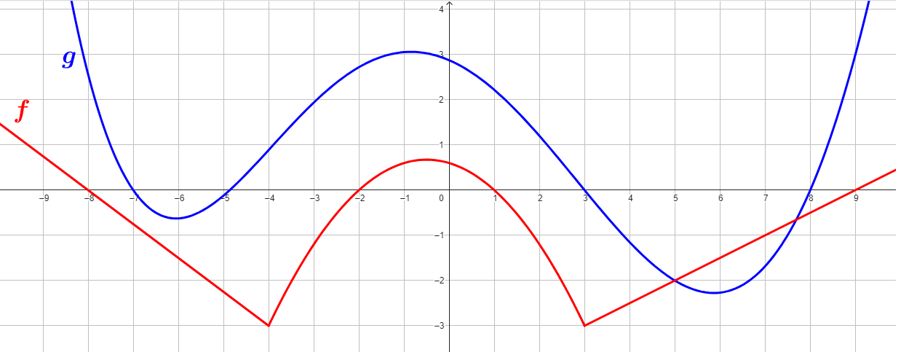

Consideriamo le funzioni \(f\) e \(g\) rappresentate rispettivamente dai
grafici rosso e blue riportati in figura.

Stabilire se le seguenti affermazioni sono vere o false, motivando la propria risposta.
-
\(f(x) \gt 0\,\,\) se \(x \in (-\infty\,,\,\,-8) \cup (-2\,,\,\,1) \cup (8\,,\,\,+\infty)\)
-
Esistono solamente due valori che assegnati ad \(x\) rendono il valore della funzione \(g\) uguale a \(0\)
-
I grafici delle funzioni \(f\) e \(g\) si intersecano in esattamente tre punti.
-
\(f(5) = g(5)\)
-
Le funzioni \(f\) e \(g\) assumono lo stesso valore in esattamente due punti.
-
\(g(x) \lt f(x)\,\,\) per ogni \(\,\,x \in (-5\,,\,\,-2)\)